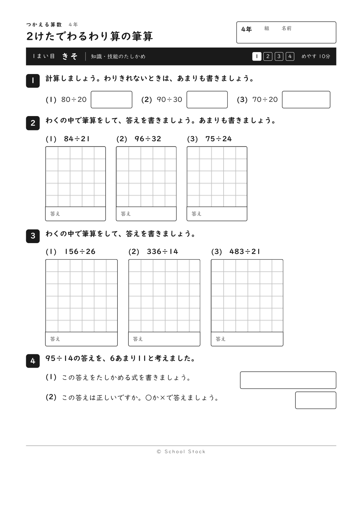
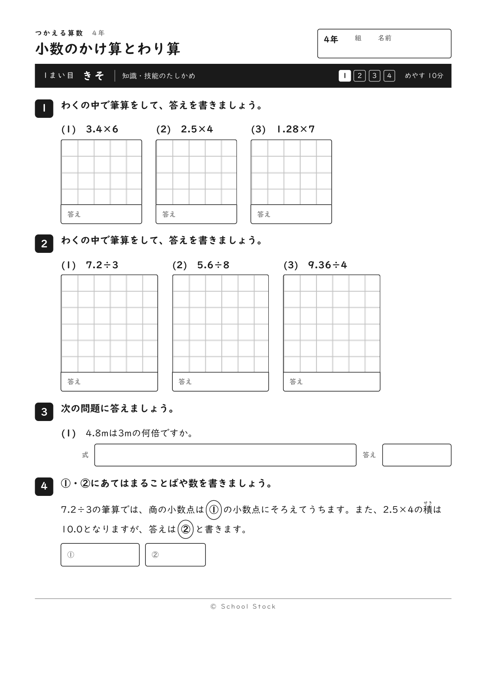
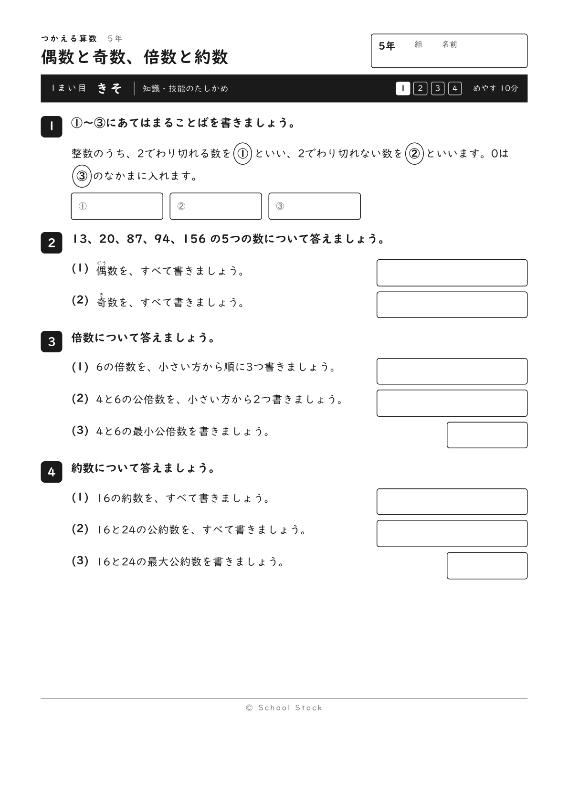

教科をまたいで同じ形でつくっている、活用問題のシリーズです。1単元＝4まい＋解答。1まい目で全員の足場をつくってから、学力テストで出るような読み取り・思考・記述に登っていきます。式・図・文章はすべて自作、© School Stock。
7 単元を表示中
全6単元 啓林館の年間指導計画に沿った配当順です。


全1単元

つかえる算数（3・5・6年）とつかえる国語（3〜6年）の8単元は、教室で使ってみている最中です。 手ごたえを見てから、この棚に並べます。先に見てくださる方むけに、 合言葉つきのページに置いてあります。合言葉は直接おたずねください。